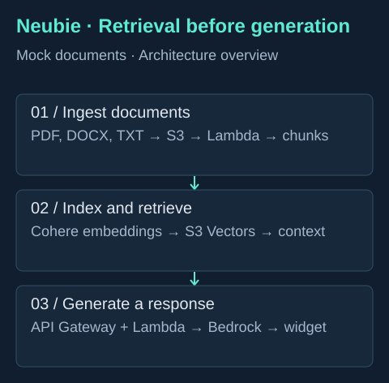
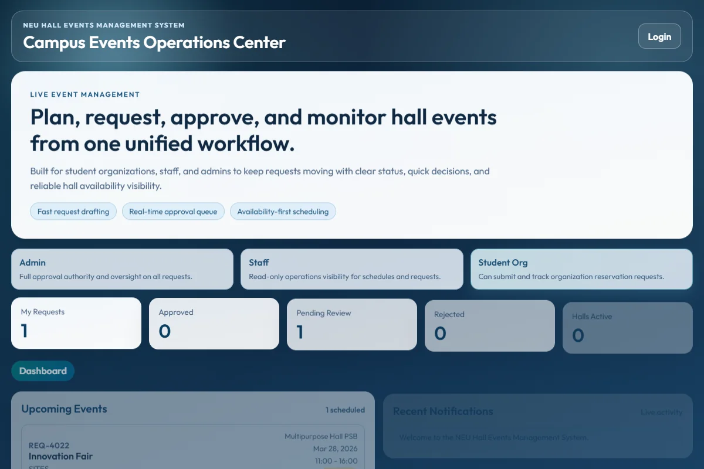

Oct 2026 — Present
Networking Intern · SSS Main Branch
Working on cable tone tracing, device setup, connectivity troubleshooting and patch panel installation alongside my BSIT studies.
Networking Intern · SSS Main Branch
I’m a BSIT student building AWS applications, exploring authentication security and gaining hands-on networking experience.
Quezon City, Philippines · New Era University
01 / The introduction
Curious by nature. Practical by choice.
I’m Felix, a fourth-year Information Technology student at New Era University. I’m interested in how systems are built, how they connect, and how to keep them secure.
Currently, I’m a Networking Intern at SSS Main Branch. Alongside my internship, I learn through hands-on projects: building AWS workflows, assessing authentication in a security lab, and working through the integration issues that appear when applications meet infrastructure.
My work brings together cloud infrastructure, cybersecurity and networking, supported by practical experience in web development and API automation. I’m preparing for the ISC2 Certified in Cybersecurity (CC) exam on November 16, 2026.
I’m open to early-career opportunities and freelance projects where I can contribute, learn from a team, and build useful systems.
02 / Learning by doing
Oct 2026 — Present
Working on cable tone tracing, device setup, connectivity troubleshooting and patch panel installation alongside my BSIT studies.
2023 — Present
Self-employed · Remote
Implemented OAuth 2.0 and webhook integrations, with validation, error handling and retry logic. Troubleshot API connections and system reliability across automation workflows.
03 / Selected work
Selected work in cloud, security and application development.

A university assistant that retrieves relevant document context before generating an answer.
Read case studyStudent questions need answers tied to university documents, rather than a model’s general knowledge.
Built upload and ingestion workflows for PDF, DOCX and TXT, vector retrieval, response generation, an embeddable widget, and an admin interface for managing indexed documents. API Gateway connects the serverless backend.
Testing uses mock university documents. The separate defense demo API is prepared; its AWS deployment is pending. Evaluation and production readiness remain ongoing.
Read the case study
A focused assessment of authentication weaknesses in an intentionally vulnerable application.
Read case studyWhat can go wrong when an application accepts a token without correctly validating its signature, algorithm or expiration?
Assessed these validation areas against OWASP Juice Shop v12.1.0 as part of the Vibecode security risk assessment. Documented findings and their implications for authentication and access control.
This was a controlled learning assessment of an intentionally vulnerable application.
Read the case study
A hall reservation and events system with role-based access and booking conflict detection.
Read case studyUniversity Hall and Multipurpose Hall reservations need coordinated scheduling and separate student and administrator workflows.
Contributed full-stack development, JWT authentication, role-based access and conflict detection. Led sprint planning and backlog grooming as Scrum Master.
Resolved CORS issues and serverless database connection-pooling failures to stabilize deployment.
Read the case studyApplications, automation and research.
A React and TypeScript household services platform with Supabase-backed customer, staff and administrator workflows. Built service browsing, booking, saved addresses, request tracking and role-based access policies.
Prototype. GCash and Maya flows are simulated. Database upgrades and live authentication checks remain deployment prerequisites.
Customized PhotoboothProject v4 on Windows and Apache with PHP and PowerShell print automation, persistent job records to reduce duplicate automatic submissions, and QR downloads for matching digital photos. Prepared two strips on one 4R sheet.
Based on the open-source PhotoboothProject. Used by over 100 attendees at the NEU UAPSA General Assembly. Physical print validation remains part of event setup.
Built a responsive agency website with React Three Fiber visuals, GSAP animation, section-based navigation and filterable case studies. Includes a Vercel deployment configuration.
Ongoing development. Marketing results displayed in the agency’s case studies are separate from my website development contributions.
Smart hydration monitoring research covering ESP32 sensing, load-cell calibration, reminders and offline records. The proposed architecture connects a Flutter application and ESP32 to a local Node.js/Express backend and MongoDB.
Research and prototype design. Implementation and validation remain ongoing. Water depletion is distinguished from confirmed drinking.
Developed workflows for patient records, appointments and staff information, applying structured data handling and input validation.
View repository ↗Built third-party weather API integration with request handling, response parsing and error handling for unreliable network conditions.
View repository ↗A Python/Tkinter utilities application with URL shortening, a calculator, SMS messaging and test-data generation. Includes user authentication and input validation; the original implementation uses SHA-256 password hashing.
View repository ↗04 / Foundations
Expected 2027
New Era University · Fourth year
Networking, systems administration, information assurance and security, and data communications.
Issued Oct 16, 2026 · Credential ID: 8561572160FH
View certificate ↗Issued Oct 15, 2026 · Credential ID: 8161462048FH
View certificate ↗Issued Oct 7, 2026 · Credential ID: 7172631441FH
View certificate ↗Issued Dec 2024 · Expires Dec 2026
Issued Dec 2024 · Expires Dec 2026
Issued Dec 2024 · Expires Dec 2026
Issued Oct 2024 · Expires Oct 2027
05 / The next chapter
I’m interested in early-career cloud and cybersecurity opportunities, freelance web development, and conversations with teams building useful systems.
felixadriel.hate@neu.edu.ph